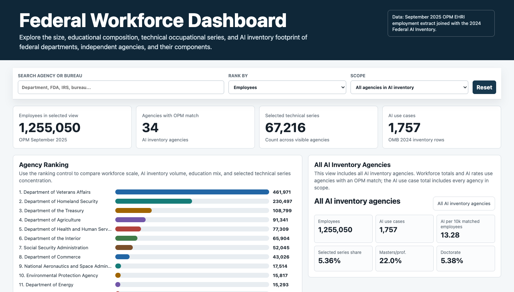

Research · Data tools · Robotics
John H. Wan
Exploring federal AI and workforce capacity through public data, interactive tools, and hands-on learning.
Explore the research01 / Research
Federal AI and the workforce
Interactive analysis of public federal data, with source notes and clear limits on what the numbers can show.

Interactive dashboard
Federal Workforce Dashboard
Compare agency and bureau employment, educational attainment, selected technical occupations, and reported AI use cases.
02 / Teaching and making
Robotics coaching
Robotics is where coding, design, and teamwork become tangible. I use coaching and hands-on projects to help learners test ideas, build confidence, and work through real engineering problems.
Coaching notes and project materials will be added as they are ready to share.
03 / About
Research made inspectable
This site brings together dissertation research, public-data analysis, and practical tools for asking better questions about AI in government. Each published project will include its sources and methods so the work can be examined and reused thoughtfully.
View my GitHub